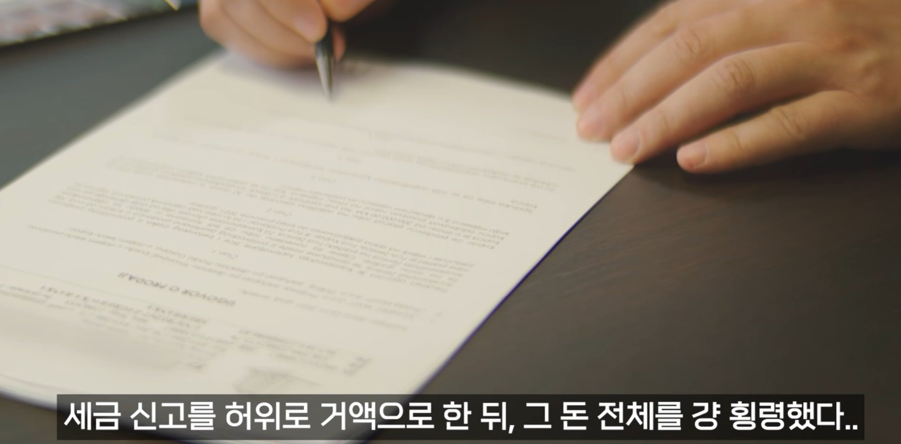

오우 쉣

오우 쉣
헐...저 회계사가 큰 원인일수도 있겠네ㅠ
그것도 있고 계속 열심히 배우 활동을 하려고 했는데 '이 캐릭은 장애캐릭이 아닌데요' 하면서 거절하고 계속 좌절되니까 나는 장애캐릭만 맡을 수 있는게 아닌데 하면서 스트레스 받았다더라 캐스팅 되더라도 대사 3줄 정도의 엑스트라 수준만 주고
에구... 그걸로 너무 알려져버린게 독으로 작용한걸 수도 있겠네ㅠㅜ
저런건 회계사입장에서는 훈장일까 걸림돌일까?
당장 횡령 배임으로 깜빵 갈짓인데 훈장이 될리가?
" 세금신고를 허위로 거액으로 한뒤 그 돈 전체를 걍 횡령했다 "
어떤 삶을 살길레 이게 훈장이되..?
횡령이 어떻게 훈장임 ㄷㄷ
꼼수써서로 고객에게 이득을 준게 아니라
고객을 털어먹었는데 누가 저 사람에게 자기 돈을 맡기겠냐
저런 새끼를 사기꾼이라고 하는거에요 범죄자새끼임
곁에 사울굿맨같은 사람이 없었네...
와 ㄷㄷㄷ 근데 저렇게 잘못 부과된 세금은 감면 안해주나??
세금을 일부러 부풀려서 부과했는데 왜 회계사가가져감? ?? 배우가 회계사에게 줘서 대납하는건가?
국세청에 바로 입금하는 구조가 아닌가봄
안전수칙은 피로 쓰인다더니
회계사를 구할것
돈이 많다면 더 많은 회계사를 구할것
고소거리 아님?
저 배우 자살했음
며칠전이네...
여자친구가 있었는데 가족 아님 자길 선택하라는 둥 갈등이 있었고 결국 여친이랑 갈라짐. 그 문제로 굉장히 괴로워했다함..
현실이 브레이킹 배드였어
작 중 그의 엄마였던 스카일러 같이 스캠하는 회계사를 만나버렸어...
안타깝네.. 세상 떠나서 더 씁쓸.